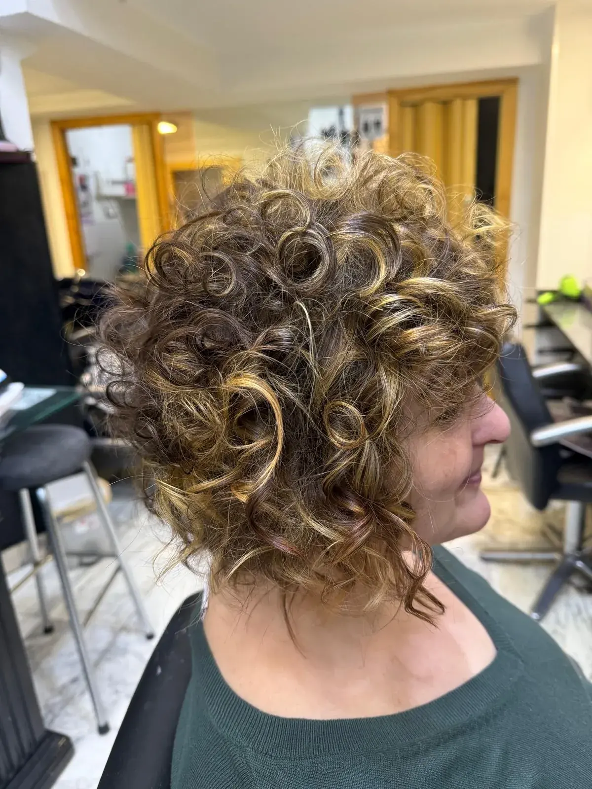

Forma
Repartimos el volumen según tu densidad y el resultado que buscas, sin aplicar la misma silueta a todo el mundo.
Cabello rizado · Vallecas
Un buen corte rizado no borra la textura: reparte el peso, acompaña el movimiento y deja una forma que puedas reconocer y cuidar en casa.
Pedir cita por teléfono ↗
Cada rizo cae distinto
La densidad, el encogimiento, el patrón y la rutina cambian por completo un corte. María trabaja el cabello rizado desde hace años y empieza por observar cómo cae, dónde se acumula el volumen y qué zonas necesitan aire. También pregunta cómo lo secas y cuánto tiempo quieres dedicarle: una forma preciosa que exige una hora cada mañana quizá no sea la forma adecuada.
El objetivo puede ser definir, liberar peso, recuperar movimiento o acompañar una transición. Si añadimos color o mechas, pensamos en cómo se verá la luz con el rizo en movimiento y en cuidar una fibra que suele pedir menos fricción y más atención en los largos.
Repartimos el volumen según tu densidad y el resultado que buscas, sin aplicar la misma silueta a todo el mundo.
Trabajamos con el rizo real y su encogimiento, no contra ellos. La observación manda sobre la etiqueta.
Te explicamos gestos sencillos de lavado, secado y producto para que el corte no dependa solo de nuestras manos.
Si vienes con una idea, tráela. Nos sirve como punto de conversación, no como molde rígido.
Hablemos de tu rizo
Cuéntanos tu caso y concertamos la cita por teléfono.
Llamar al 914 77 27 37 ↗